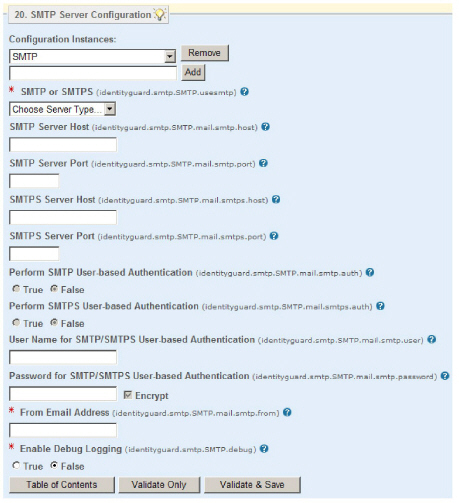

|
IdentityGuard Server 13.0 Administration Guide |
|
IdentityGuard Server 13.0 Administration Guide |
If you have already have set up an email server in Entrust IdentityGuard, you can use your existing email server or set up a new one specifically for OTP delivery. If you already have an email server you want to use, skip this procedure and proceed to To configure an email OTP service.
If you are using an SMTPS server, you must import the SSL certificate into Entrust Identity Guard. See Downloading and installing third-party SSL certificates.
To configure an SMTP or SMTPS server
2. On the Table of Contents, click SMTP Server Configuration. You use this pane to set up the email server for use in delivering OTPs by email.
3. In the empty field below Configuration Instances, enter a unique service name. Click Add.
The pane expands to reveal other properties. Several are required fields.
You can configure more than one SMTP or SMTPS server so that you can provide services for different user groups or locations. Just give each instance a different name.

4. In the SMTP or SMTPS drop-down list, select the type of server you are setting up.
5. If you select SMTP, enter:
● SMTP Server Host — Enter the host name or IP address of the mail server.
● SMTP Server Port — Enter the port of the SMTP server. If you do not specify one, port 25 is assumed.
6. If you select SMTPS, enter:
● SMTPS Server Host — Enter the host name or IP address of the mail server.
● SMTPS Server Port — Enter the port of the SMTPS server. If you do not specify one, port 465 is assumed.
7. If you want to enforce authentication to the mail server, select True for Perform SMTP User-based Authentication or Perform SMTP User-based Authentication, as applicable.
8. If you selected True in the previous step, enter the following information:
● User Name for SMTP/SMTPS User-based Authentication — Enter the user name to use for authentication to this mail server.
● Password for SMTP/SMTPS User-based Authentication — Enter the password to use for authentication to this mail server. You can store this password in encrypted form, if desired, by selecting the Encrypt option.
9. In From Email Address, enter the email address you want displayed as the “from” address on Entrust IdentityGuard emails sent from this mail server.
10. Under Enable Debug Logging:
● Select True to enable javamail debug logging.
When javamail debug logging is enabled, detailed information about email messages—including the email message content—is output to your application server’s log file, or to the screen (if you are using the Master user shell). For example, if you run the command user otp deliver jsmith “Home Email” in the Master user shell, the content of “Home Email” is displayed on-screen when Enable Debug Logging is True. Since email messages may contain sensitive information, such as OTPs, only enable debug logging temporarily for troubleshooting purposes.
● Select False (default) to disable javamail debug logging.
11. Click Validate & Save.

 Windows
Windows